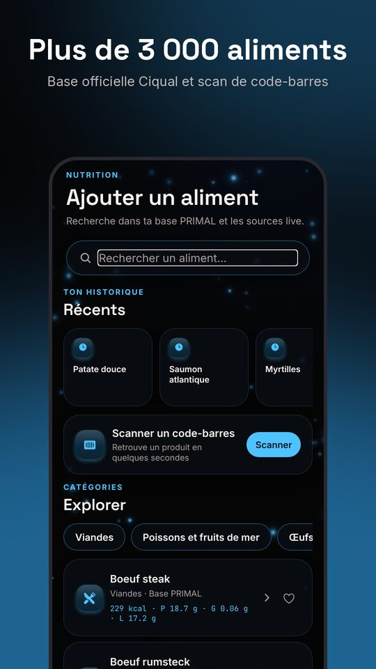
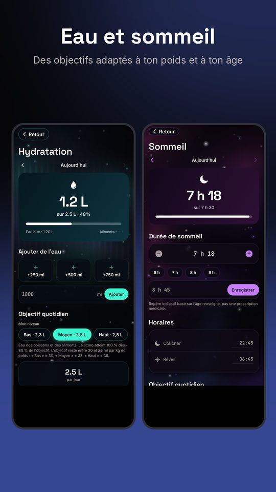
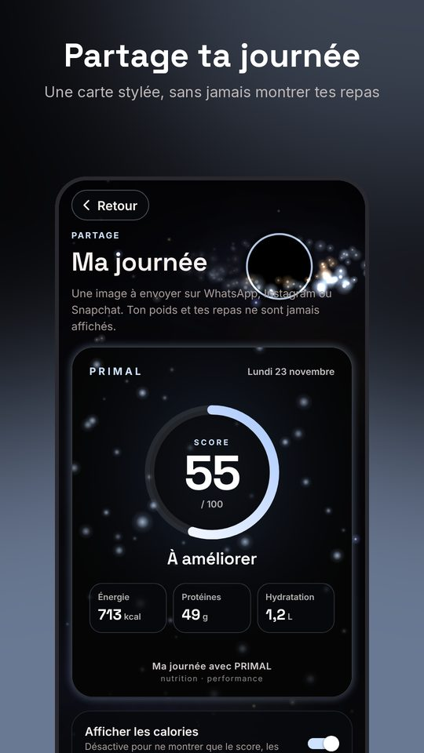
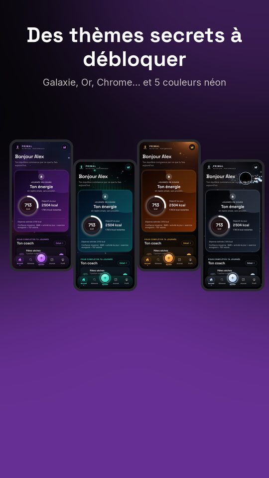

Les sept piliers
Ta note sur 100
PRIMAL réunit toute ta journée en un seul chiffre, calculé à partir de sept piliers.
- I
Nutrition
Calories et objectif calculés selon ton profil et ton activité.
- II
Macronutriments
Protéines, glucides, lipides et fibres, repas par repas.
- III
Micronutriments
Vitamines, minéraux et oméga-3 suivis gratuitement, sans abonnement.
- IV
Hydratation
Un objectif d'eau calculé selon ton poids.
- V
Sommeil
Une plage idéale adaptée à ton âge.
- VI
Activité
Tes pas et plus de 15 sports.
- VII
Temps dehors
Le temps passé à l'extérieur compte aussi.
Plus de 3 000 aliments
Issus de la table officielle Ciqual (ANSES), plus le scan de code-barres via Open Food Facts.
Un objectif qui s'adapte
Note ton poids : PRIMAL ajuste ton objectif calorique selon ta dépense réelle.
Un coach
Il te propose les aliments qui complètent ta journée.
Bilan de la semaine
Score moyen, réussites et manques récurrents.
Partage stylé
Une carte de ta journée, sans jamais montrer tes repas ni ton poids.
Thèmes secrets
5 couleurs néon, plus Galaxie, Or et Chrome à débloquer.
L'application
En images






Fais défiler →
Confidentialité
Tes données restent chez toi
- Pas de compteTu ouvres l'app, tu commences.
- Pas de serveurTout est stocké sur ton téléphone.
- Pas de publicitéRien à vendre sur toi.
- Sauvegarde exportableTes données t'appartiennent.
Questions fréquentes
FAQ
Faut-il créer un compte ?
Non. PRIMAL fonctionne sans compte et sans serveur : tout reste sur ton téléphone.
Le suivi des vitamines et minéraux est-il payant ?
Non. Vitamines, minéraux, fibres et oméga-3 sont suivis gratuitement, sans abonnement, et l'app ne contient pas de publicité.
D'où viennent les données des aliments ?
De la table de composition nutritionnelle Ciqual de l'ANSES (plus de 3 000 aliments) et d'Open Food Facts pour le scan de code-barres.
Comment est calculée ma note sur 100 ?
À partir de sept piliers : nutrition, macronutriments, micronutriments, hydratation, sommeil, activité et temps dehors.
Est-ce que je peux récupérer mes données ?
Oui, la sauvegarde est exportable depuis l'application.
Sur quels téléphones ?
PRIMAL arrive d'abord sur Android, via Google Play.
PRIMAL remplace-t-il un avis médical ?
Non. PRIMAL est un outil de suivi : il ne remplace pas l'avis d'un professionnel de santé.